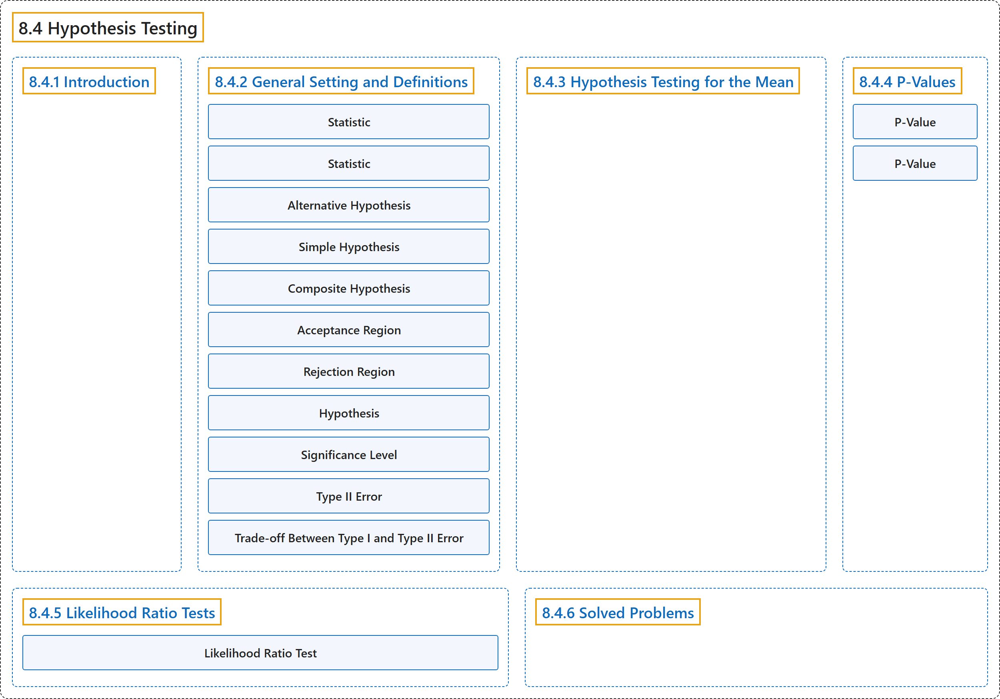

8.4 Hypothesis Testing
Classification

Glossary
| Term | Definition | 中文翻译 | Source |
|---|---|---|---|
| 8.4 Hypothesis Testing 假设检验 |
(No definition) | （无定义） | Pishro-Nik, 2014, section 8.4 |
| 8.4.1 Introduction 介绍 |
(No definition) | （无定义） | Pishro-Nik, 2014, section 8.4.1 |
| 8.4.2 General Setting and Definitions 一般设定与定义 |
(No definition) | （无定义） | Pishro-Nik, 2014, section 8.4.2 |
| Statistic 统计量 |
"A statistic is a real-valued function of the data." | 统计量是数据的实值函数。 | Pishro-Nik, 2014, section 8.4.2 |
| Statistic 统计量 |
"A statistic is a real-valued function of the data." | 统计量是数据的实值函数。 | Pishro-Nik, 2014, section 8.4.2 |
| Alternative Hypothesis 备择假设 |
"\(H_0\) (the null hypothesis): \(\theta \in S_0\). \(\quad\) \(H_1\) (the alternative hypothesis): \(\theta \in S_1\)." | \(H_0\)（原假设）：\(\theta \in S_0\)。\(\quad\) \(H_1\)（备择假设）：\(\theta \in S_1\)。 | Pishro-Nik, 2014, section 8.4.2 |
| Simple Hypothesis 简单假设 |
"Here, \(H_0\) is an example of a simple hypothesis because \(S_0\) contains only one value of \(\theta\)." | 这里，\(H_0\) 是简单假设的一个例子，因为 \(S_0\) 只包含 \(\theta\) 的一个值。 | Pishro-Nik, 2014, section 8.4.2 |
| Composite Hypothesis 复合假设 |
"On the other hand, \(H_1\) is an example of composite hypothesis since \(S_1\) contains more than one element." | 另一方面，\(H_1\) 是复合假设的一个例子，因为 \(S_1\) 包含不止一个元素。 | Pishro-Nik, 2014, section 8.4.2 |
| Acceptance Region 接受域 |
"The set \(A\) is called the acceptance region, while the set \(R=\mathbb{R}-A\) is said to be the rejection region." | 集合 \(A\) 称为接受域，而集合 \(R=\mathbb{R}-A\) 称为拒绝域。 | Pishro-Nik, 2014, section 8.4.2 |
| Rejection Region 拒绝域 |
"The set \(A\) is called the acceptance region, while the set \(R=\mathbb{R}-A\) is said to be the rejection region." | 集合 \(A\) 称为接受域，而集合 \(R=\mathbb{R}-A\) 称为拒绝域。 | Pishro-Nik, 2014, section 8.4.2 |
| Hypothesis 假设 |
"A hypothesis is a statement such as \(\theta=1\), \(\theta>1.3\), \(\theta \neq 0.5\), etc. In hypothesis testing problems, we need to decide between two contradictory hypotheses." | 假设是形如 \(\theta=1\)、\(\theta>1.3\)、\(\theta \neq 0.5\) 等的陈述。在假设检验问题中，我们需要在两个相互矛盾的假设之间做出决定。 | Pishro-Nik, 2014, section 8.4.2 |
| Significance Level 显著性水平 |
"then we say the test has significance level \(\alpha\) or simply the test is a level \(\alpha\) test." | 则称该检验的显著性水平为 \(\alpha\)，或简称该检验是水平 \(\alpha\) 检验。 | Pishro-Nik, 2014, section 8.4.2 |
| Type II Error 第二类错误 |
"The second possible error that we can make is to accept \(H_0\) when \(H_0\) is false. This is called the type II error." | 我们可能犯的第二种错误是在 \(H_0\) 为假时接受 \(H_0\)。这称为第二类错误。 | Pishro-Nik, 2014, section 8.4.2 |
| Trade-off Between Type I and Type II Error 第一类与第二类错误的权衡 |
"However, there is in fact a trade-off between \(\alpha\) and \(\beta\). That is, if we want to decrease the probability of type I error (\(\alpha\)), then the probability of type II error (\(\beta\)) increases, and vise versa." | 然而，\(\alpha\) 与 \(\beta\) 之间实际上存在权衡。也就是说，如果我们想减小第一类错误的概率（\(\alpha\)），则第二类错误的概率（\(\beta\)）会增大，反之亦然。 | Pishro-Nik, 2014, section 8.4.2 |
| 8.4.3 Hypothesis Testing for the Mean 均值的假设检验 |
(No definition) | （无定义） | Pishro-Nik, 2014, section 8.4.3 |
| 8.4.4 P-Values P值 |
(No definition) | （无定义） | Pishro-Nik, 2014, section 8.4.4 |
| P-Value P 值 |
"P-value is the lowest significance level \(\alpha\) that results in rejecting the null hypothesis." | P 值是导致拒绝原假设的最低显著性水平 \(\alpha\)。 | Pishro-Nik, 2014, section 8.4.4 |
| P-Value P值 |
"The \(P\)-value is \(P(\textrm{type I error})\) when the test threshold \(c\) is chosen to be \(c=w_1\)." | 当检验阈值 \(c\) 取为 \(c=w_1\) 时，\(P\) 值就是 \(P(\textrm{type I error})\)。 | Pishro-Nik, 2014, section 8.4.4 |
| 8.4.5 Likelihood Ratio Tests 似然比检验 |
(No definition) | （无定义） | Pishro-Nik, 2014, section 8.4.5 |
| Likelihood Ratio Test 似然比检验 |
"To perform a likelihood ratio test (LRT), we choose a constant \(c\). We reject \(H_0\) if \(\lambda \lt c\) and accept it if \(\lambda \geq c\)." | 为进行似然比检验（LRT），我们选取一个常数 \(c\)。若 \(\lambda \lt c\) 则拒绝 \(H_0\)，若 \(\lambda \geq c\) 则接受 \(H_0\)。 | Pishro-Nik, 2014, section 8.4.5 |
| 8.4.6 Solved Problems 例题详解 |
(No definition) | （无定义） | Pishro-Nik, 2014, section 8.4.6 |
References
Pishro-Nik, H. (2014). Introduction to probability, statistics, and random processes. Kappa Research. Retrieved October 28, 2026, from https://www.probabilitycourse.com/